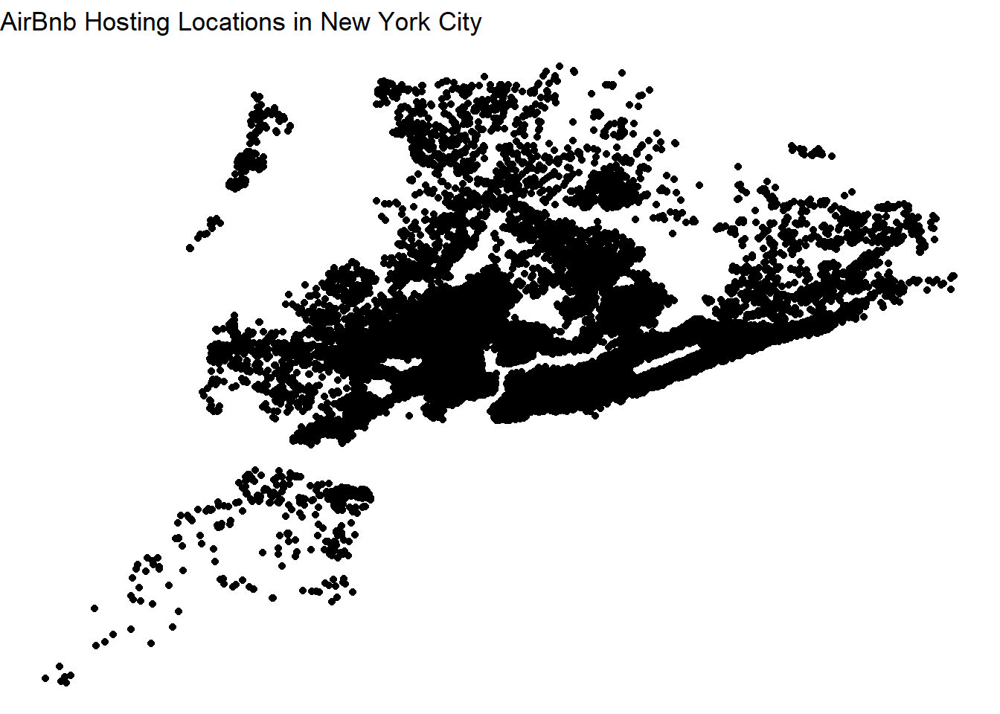

library(tidyverse)
library(ggplot2)
library(dplyr)
library(readr)
knitr::opts_chunk$set(echo = TRUE, warning=FALSE, message=FALSE)Challenge 5 Kristin Abijaoude
challenge_5
kristin_abijaoude
AB_NYC_19
Introduction to Visualization
AB_NYC_2019 <- read_csv("_data/AB_NYC_2019.csv")
AB_NYC_2019# A tibble: 48,895 × 16
id name host_id host_…¹ neigh…² neigh…³ latit…⁴ longi…⁵ room_…⁶ price
<dbl> <chr> <dbl> <chr> <chr> <chr> <dbl> <dbl> <chr> <dbl>
1 2539 Clean & … 2787 John Brookl… Kensin… 40.6 -74.0 Privat… 149
2 2595 Skylit M… 2845 Jennif… Manhat… Midtown 40.8 -74.0 Entire… 225
3 3647 THE VILL… 4632 Elisab… Manhat… Harlem 40.8 -73.9 Privat… 150
4 3831 Cozy Ent… 4869 LisaRo… Brookl… Clinto… 40.7 -74.0 Entire… 89
5 5022 Entire A… 7192 Laura Manhat… East H… 40.8 -73.9 Entire… 80
6 5099 Large Co… 7322 Chris Manhat… Murray… 40.7 -74.0 Entire… 200
7 5121 BlissArt… 7356 Garon Brookl… Bedfor… 40.7 -74.0 Privat… 60
8 5178 Large Fu… 8967 Shunic… Manhat… Hell's… 40.8 -74.0 Privat… 79
9 5203 Cozy Cle… 7490 MaryEl… Manhat… Upper … 40.8 -74.0 Privat… 79
10 5238 Cute & C… 7549 Ben Manhat… Chinat… 40.7 -74.0 Entire… 150
# … with 48,885 more rows, 6 more variables: minimum_nights <dbl>,
# number_of_reviews <dbl>, last_review <date>, reviews_per_month <dbl>,
# calculated_host_listings_count <dbl>, availability_365 <dbl>, and
# abbreviated variable names ¹host_name, ²neighbourhood_group,
# ³neighbourhood, ⁴latitude, ⁵longitude, ⁶room_typeBriefly describe the data
This dataset comprises of AirBnB listings in New York City by borough, neighborhood, hosts, and availability in the year of 2019. This CSV file has 48,895 rows and 16 columns. Below, we have the names of the variables in the dataset.
nrow(AB_NYC_2019)[1] 48895ncol(AB_NYC_2019)[1] 16dim(AB_NYC_2019)[1] 48895 16summary(AB_NYC_2019) id name host_id host_name
Min. : 2539 Length:48895 Min. : 2438 Length:48895
1st Qu.: 9471945 Class :character 1st Qu.: 7822033 Class :character
Median :19677284 Mode :character Median : 30793816 Mode :character
Mean :19017143 Mean : 67620011
3rd Qu.:29152178 3rd Qu.:107434423
Max. :36487245 Max. :274321313
neighbourhood_group neighbourhood latitude longitude
Length:48895 Length:48895 Min. :40.50 Min. :-74.24
Class :character Class :character 1st Qu.:40.69 1st Qu.:-73.98
Mode :character Mode :character Median :40.72 Median :-73.96
Mean :40.73 Mean :-73.95
3rd Qu.:40.76 3rd Qu.:-73.94
Max. :40.91 Max. :-73.71
room_type price minimum_nights number_of_reviews
Length:48895 Min. : 0.0 Min. : 1.00 Min. : 0.00
Class :character 1st Qu.: 69.0 1st Qu.: 1.00 1st Qu.: 1.00
Mode :character Median : 106.0 Median : 3.00 Median : 5.00
Mean : 152.7 Mean : 7.03 Mean : 23.27
3rd Qu.: 175.0 3rd Qu.: 5.00 3rd Qu.: 24.00
Max. :10000.0 Max. :1250.00 Max. :629.00
last_review reviews_per_month calculated_host_listings_count
Min. :2011-03-28 Min. : 0.010 Min. : 1.000
1st Qu.:2018-07-08 1st Qu.: 0.190 1st Qu.: 1.000
Median :2019-05-19 Median : 0.720 Median : 1.000
Mean :2018-10-04 Mean : 1.373 Mean : 7.144
3rd Qu.:2019-06-23 3rd Qu.: 2.020 3rd Qu.: 2.000
Max. :2019-07-08 Max. :58.500 Max. :327.000
NA's :10052 NA's :10052
availability_365
Min. : 0.0
1st Qu.: 0.0
Median : 45.0
Mean :112.8
3rd Qu.:227.0
Max. :365.0
Tidy Data (as needed)
For the most part, the dataset is clean, but it needs a fixer-upper in some areas. First, let’s rename the variables.
AB_NYC_tidy <- AB_NYC_2019 %>%
rename("Listing ID" = id,
"Listing Name" = name,
"Host ID" = host_id,
"Host Name" = host_name,
"Borough" = neighbourhood_group,
"Neighborhood" = neighbourhood,
"Room Type" = room_type,
"Price per Night ($)" = price,
"Minimum Number of Nights" = minimum_nights,
"Number of Reviews" = number_of_reviews,
"Date of Last Review" = last_review,
"Number of Reviews per Month" = reviews_per_month,
"Calculated Host Listings Count" = calculated_host_listings_count,
"Number of Days Available During the Year" = availability_365)
AB_NYC_tidy# A tibble: 48,895 × 16
`Listing ID` Listin…¹ Host …² Host …³ Borough Neigh…⁴ latit…⁵ longi…⁶ Room …⁷
<dbl> <chr> <dbl> <chr> <chr> <chr> <dbl> <dbl> <chr>
1 2539 Clean &… 2787 John Brookl… Kensin… 40.6 -74.0 Privat…
2 2595 Skylit … 2845 Jennif… Manhat… Midtown 40.8 -74.0 Entire…
3 3647 THE VIL… 4632 Elisab… Manhat… Harlem 40.8 -73.9 Privat…
4 3831 Cozy En… 4869 LisaRo… Brookl… Clinto… 40.7 -74.0 Entire…
5 5022 Entire … 7192 Laura Manhat… East H… 40.8 -73.9 Entire…
6 5099 Large C… 7322 Chris Manhat… Murray… 40.7 -74.0 Entire…
7 5121 BlissAr… 7356 Garon Brookl… Bedfor… 40.7 -74.0 Privat…
8 5178 Large F… 8967 Shunic… Manhat… Hell's… 40.8 -74.0 Privat…
9 5203 Cozy Cl… 7490 MaryEl… Manhat… Upper … 40.8 -74.0 Privat…
10 5238 Cute & … 7549 Ben Manhat… Chinat… 40.7 -74.0 Entire…
# … with 48,885 more rows, 7 more variables: `Price per Night ($)` <dbl>,
# `Minimum Number of Nights` <dbl>, `Number of Reviews` <dbl>,
# `Date of Last Review` <date>, `Number of Reviews per Month` <dbl>,
# `Calculated Host Listings Count` <dbl>,
# `Number of Days Available During the Year` <dbl>, and abbreviated variable
# names ¹`Listing Name`, ²`Host ID`, ³`Host Name`, ⁴Neighborhood, ⁵latitude,
# ⁶longitude, ⁷`Room Type`Let’s create a new variable called “Geolocation” by combining the latitude and longitude columns.
AB_NYC_tidy <- unite(AB_NYC_tidy, "latitude", "longitude", col = "Geolocation", sep = ":")
AB_NYC_tidy# A tibble: 48,895 × 15
`Listing ID` Listin…¹ Host …² Host …³ Borough Neigh…⁴ Geolo…⁵ Room …⁶ Price…⁷
<dbl> <chr> <dbl> <chr> <chr> <chr> <chr> <chr> <dbl>
1 2539 Clean &… 2787 John Brookl… Kensin… 40.647… Privat… 149
2 2595 Skylit … 2845 Jennif… Manhat… Midtown 40.753… Entire… 225
3 3647 THE VIL… 4632 Elisab… Manhat… Harlem 40.809… Privat… 150
4 3831 Cozy En… 4869 LisaRo… Brookl… Clinto… 40.685… Entire… 89
5 5022 Entire … 7192 Laura Manhat… East H… 40.798… Entire… 80
6 5099 Large C… 7322 Chris Manhat… Murray… 40.747… Entire… 200
7 5121 BlissAr… 7356 Garon Brookl… Bedfor… 40.686… Privat… 60
8 5178 Large F… 8967 Shunic… Manhat… Hell's… 40.764… Privat… 79
9 5203 Cozy Cl… 7490 MaryEl… Manhat… Upper … 40.801… Privat… 79
10 5238 Cute & … 7549 Ben Manhat… Chinat… 40.713… Entire… 150
# … with 48,885 more rows, 6 more variables: `Minimum Number of Nights` <dbl>,
# `Number of Reviews` <dbl>, `Date of Last Review` <date>,
# `Number of Reviews per Month` <dbl>,
# `Calculated Host Listings Count` <dbl>,
# `Number of Days Available During the Year` <dbl>, and abbreviated variable
# names ¹`Listing Name`, ²`Host ID`, ³`Host Name`, ⁴Neighborhood,
# ⁵Geolocation, ⁶`Room Type`, ⁷`Price per Night ($)`# it should come out like this
# Geolocation
# 40.64749:-73.97237
# I didn't know how to add the N,S,E,W on the geolocations, so I left it as thatUnivariate Visualizations
library(ggplot2)
AB_NYC_tidy %>%
count(`Room Type`)# A tibble: 3 × 2
`Room Type` n
<chr> <int>
1 Entire home/apt 25409
2 Private room 22326
3 Shared room 1160Room_Type <- data.frame(
Room_Type =factor(c("Entire home or Apt","Private Room","Shared Room")),
Number_of_Hostings =c(25409,22326,1160)
)
Room_Type Room_Type Number_of_Hostings
1 Entire home or Apt 25409
2 Private Room 22326
3 Shared Room 1160ggplot(data=Room_Type,
aes(x = Room_Type,
y = Number_of_Hostings,
fill=Number_of_Hostings)) +
geom_bar(stat = "identity", fill ="lightblue") +
geom_text(aes(label = Number_of_Hostings),
vjust=-0.5) +
labs(x = "Room Type",
y = "Number of Hostings",
title = "Types of Rooms available on AirBnB")
Bar graphs are incredibly helpful for univariates, or data involving only one variable. I used Room Types as an example to make my point. I apply the same coding with with variables Boroughs and Minimum Number of Nights.
The majority of AirBnB hostings are entire homes or apartment rooms and private rooms, with 25409 and 22326 hostings respectively, while shared rooms make up a much smaller share, with 1160 hostings.
AB_NYC_tidy %>%
count(`Borough`)# A tibble: 5 × 2
Borough n
<chr> <int>
1 Bronx 1091
2 Brooklyn 20104
3 Manhattan 21661
4 Queens 5666
5 Staten Island 373Borough <- data.frame(
Borough =factor(c("Bronx","Brooklyn","Manhattan","Queens","Staten Island")),
Number_of_Hostings =c(1091,20104,21661,5666,373)
)
Borough Borough Number_of_Hostings
1 Bronx 1091
2 Brooklyn 20104
3 Manhattan 21661
4 Queens 5666
5 Staten Island 373ggplot(data=Borough,
aes(x = Borough,
y = Number_of_Hostings,
fill=Number_of_Hostings)) +
geom_bar(stat = "identity", fill ="lightgreen") +
geom_text(aes(label = Number_of_Hostings),
vjust=-0.5) +
labs(x = "Boroughs",
y = "Number of Hostings",
title = "Number of AirBnB Hostings by Borough")
to the surprise of almost nobody, the vast majority of AirBnB hostings are located in the boroughs of Manhattan and Brooklyn, due to the proximity of famous points of interests we all know of, such as Times Square.
AB_NYC_tidy %>%
filter(`Minimum Number of Nights` == 1)%>%
count(`Minimum Number of Nights`) +
sum() Minimum Number of Nights n
1 1 12720# Minimum Number of Nights n
# <dbl> <int>
# 1 634
# 2 563
# 3 412
# I filtered out by minimum number of nights. For example == 1 night, == 2 nights, and so on...
Nights <- data.frame(
Minimum_Number_of_Nights =factor(c("1 night","2 nights","3 nights","4 nights","5 night", "more than 5 nights")),
Number_of_Hostings =c(12720, 11696, 7999, 3303, 3034, 10143))
ggplot(data=Nights, aes(x= Minimum_Number_of_Nights, y=Number_of_Hostings, fill=Number_of_Hostings)) +
geom_bar(stat="identity",fill="lightpink") +
coord_flip()
# for whatever reason, R would give me an error when I try to replicate the same coding as the first two graphs aboveInteresting, the majority of the hostings lets visitors sleep for 1 night. The more than 5 nights bar comprises of 6 nights to the highest value of 1,250 nights in a Greenwich village home in Manhattan. Very generous of the host Genevieve.
Bivariate Visualization(s)
# create data
x <- c(AB_NYC_tidy$`Minimum Number of Nights`)
y <- c(AB_NYC_tidy$`Price per Night ($)`)
# create scatterplot
ggplot(AB_NYC_tidy,
aes(x = x,
y = y,
na.rm = TRUE)) +
geom_point(color="cornflowerblue") +
scale_y_continuous(label = scales::dollar) +
labs(x = "Minium Numbers of Night",
y = "Price Per Night ($)",
title = "Minimum Number per Nights vs Price Per Night ($)",
subtitle = "AirBnB Hostings in NYC")
Bivariates plots involve two variables, and it could be either categorical variable and numerical variable, both numerical variable, or both categorical variables.
The scatterplot graph I coded above shows a correlation between Minimum Number of Nights and Price Per Night in a given hosting. The majority of those hostings are scattered in the bottom left side of the graph– in other words, the majority allow visitors to stay a few nights in relatively less expensive (for New York City standards) places.
# create data
NYC_Borough <- c(AB_NYC_tidy$Borough)
Price <- c(AB_NYC_tidy$`Price per Night ($)`)
# create violin plot
ggplot(AB_NYC_tidy, aes(x=NYC_Borough, y=Price, fill=Price)) +
scale_y_continuous(label = scales::dollar) +
geom_violin()
This is a funny looking violin plot. The upper tip of each violin plot shows the outlier– the most expensive hosting per borough. Again, to no one’s surprise, the most expensive hostings are in Manhattan, Brooklyn, and Queens as well.
Below, I plot out a map of New York ity with one dot representing one AirBnB location.
# AirBnB locations in NYC
lat <- c(AB_NYC_2019$latitude)
long <- c(AB_NYC_2019$longitude)
# one dot represents one AirBnB hosting
ggplot() +
geom_polygon(data = AB_NYC_2019, aes(x=lat, y = long, group = long), fill="grey", alpha=0.3) +
geom_point(data= AB_NYC_2019, aes(x=lat, y=long)) +
ggtitle("AirBnb Hosting Locations in New York City") +
theme_void()
ggplot() +
geom_polygon(data=AB_NYC_2019, aes(x=long, y=lat),
color="black", fill="lightblue" )